出发
周日 08:00
预计到家
周日 17:45
游玩的
白洋淀 + 雄安印象 + 之眼
总里程
≈ 340km
自驾路线总览
望都家园 ↔ 雄安新区（容城）· G4京港澳高速
- 1 周日 08:00 从昌平北七家望都家园出发，走六环 → G4京港澳高速（约 170km，2h15min）
- 2 在 容城/雄安新区出口 下高速，直接前往白洋淀
- 3 白洋淀 → 午餐 → 雄安印象 → 雄安之眼，从容游玩
- 4 约 15:30 从雄安之眼出发，经 G4 返回望都家园，17:45 左右到家
行程时间轴 · 5月24日（周日）
08:00 出发
望都家园 → 雄安新区（容城）
从昌平北七家望都家园出发，走六环转 G4京港澳高速向南，全程约 170 公里，预计 2 小时 15 分钟。建议提前加满油、检查胎压。
10:15 到达
白洋淀风景区 — 乘船游览芦苇荡
到达 安新白洋淀停车场（小型车 ¥20/次）。建议买"荷花大观园 + 游船"通票。初夏芦苇青青、碧波万顷，穿行芦苇荡约 1.5-2 小时。
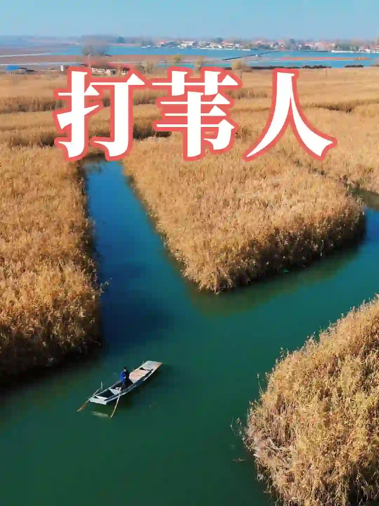
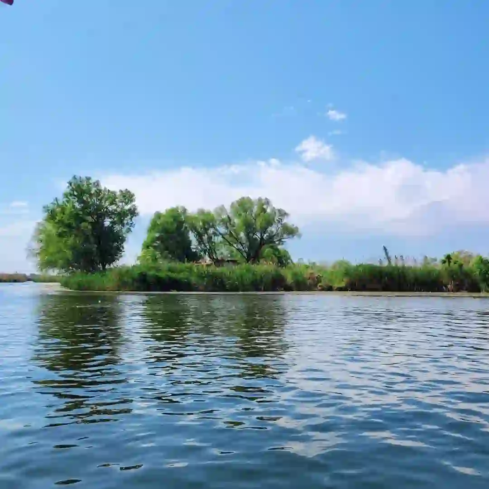
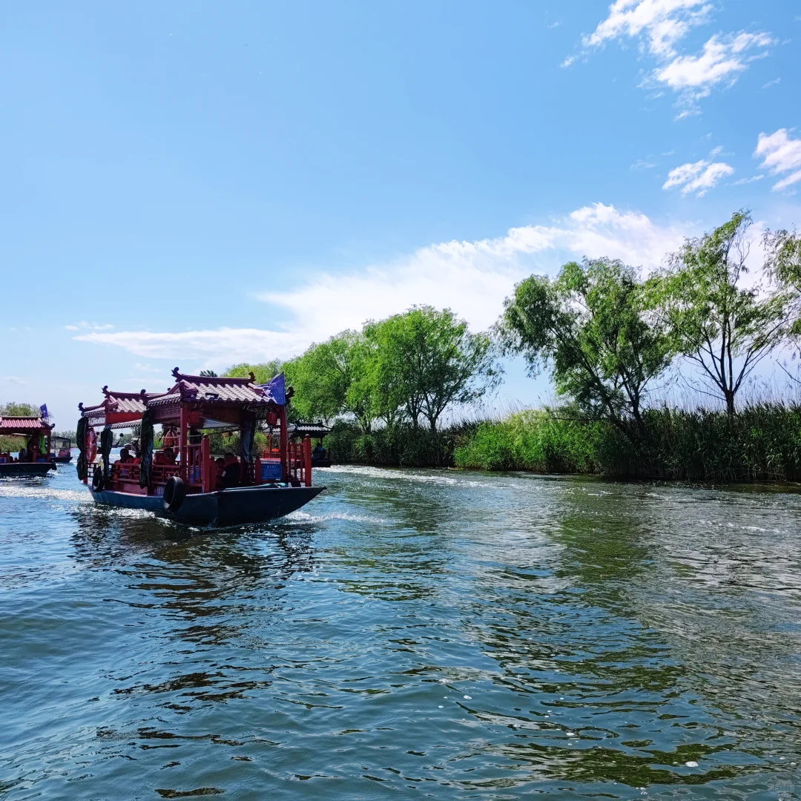
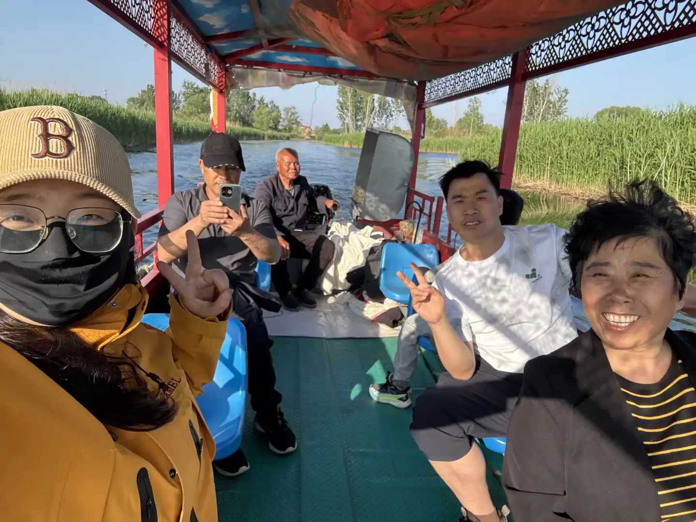
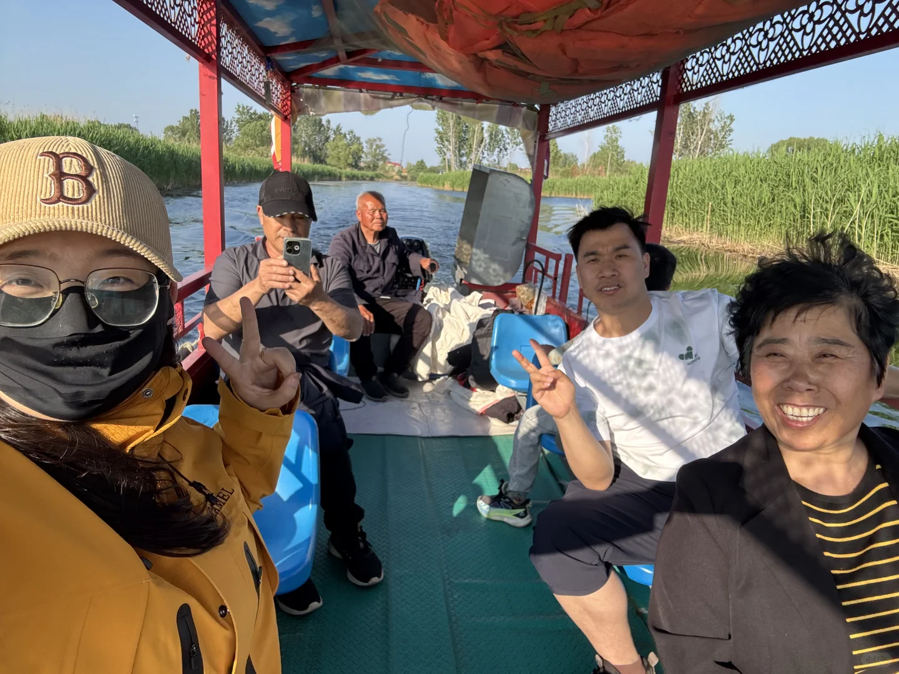
12:15 午餐
雄安味道（推荐）· 奥威路97号
从白洋淀返回容城约 25 分钟。奥威路97号，主营京鲁川湘粤及本地特色菜。备选：会友春饭店（白洋淀炖杂鱼）、聚湘食餐厅（奥威路91号，湘菜）。
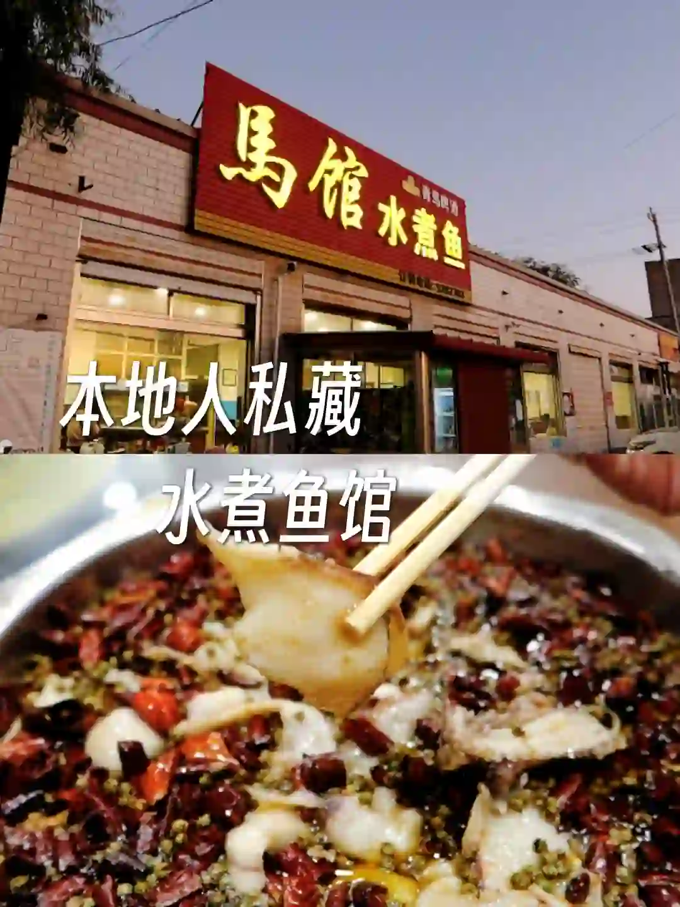
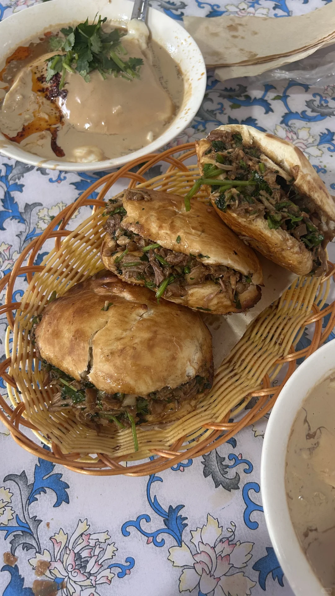
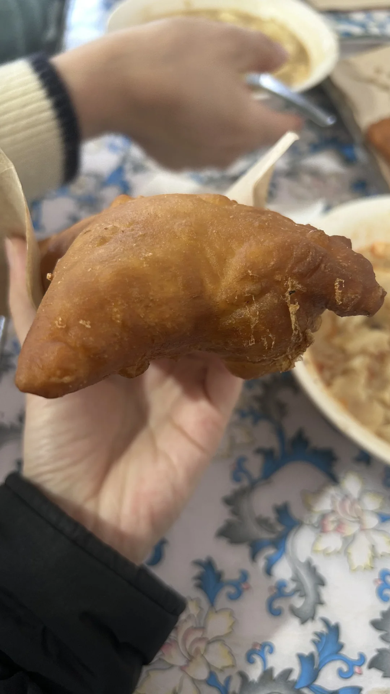
13:30 参观
雄安印象展览馆
容城县容东金湖东路76号，距餐厅约10分钟。以光影科技展现雄安城市变迁，水墨丹青与灯光艺术结合，拍照圣地，游览约 1 小时。
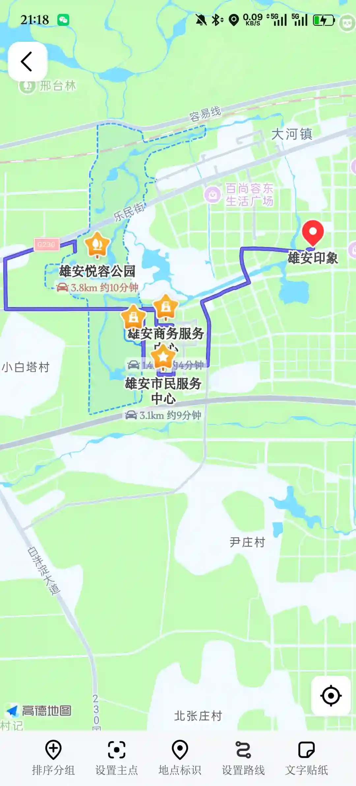
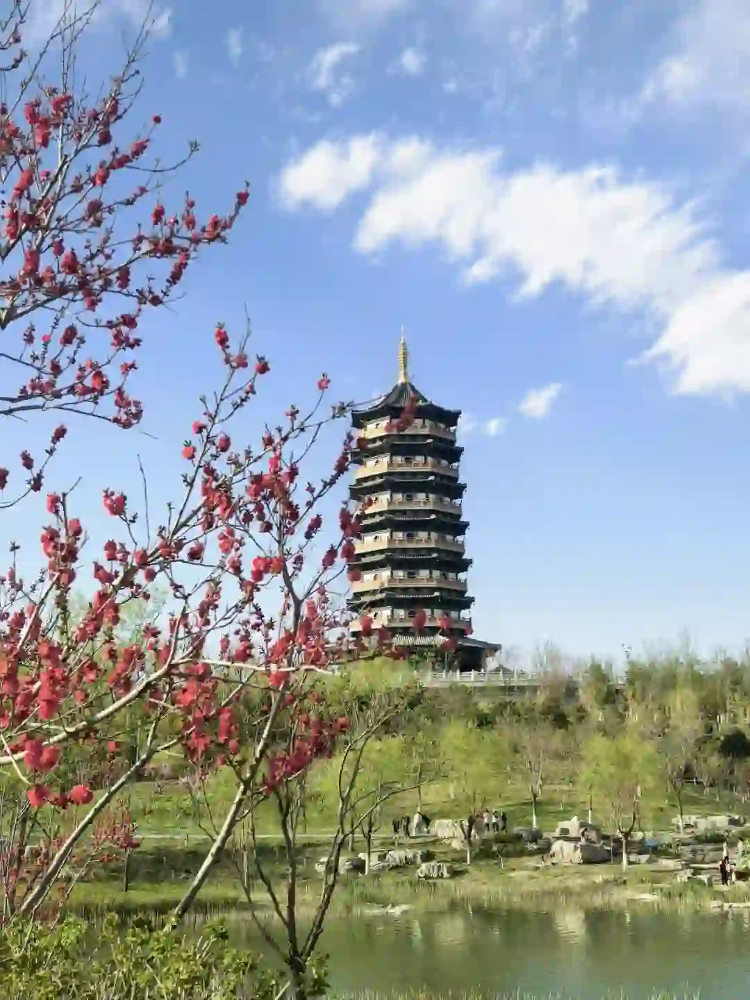


14:30 打卡
雄安之眼（城市计算中心）
雄安地标建筑，拱形结构倒映水面如"智慧之眼"。在此拍一张打卡照，然后从容返程。
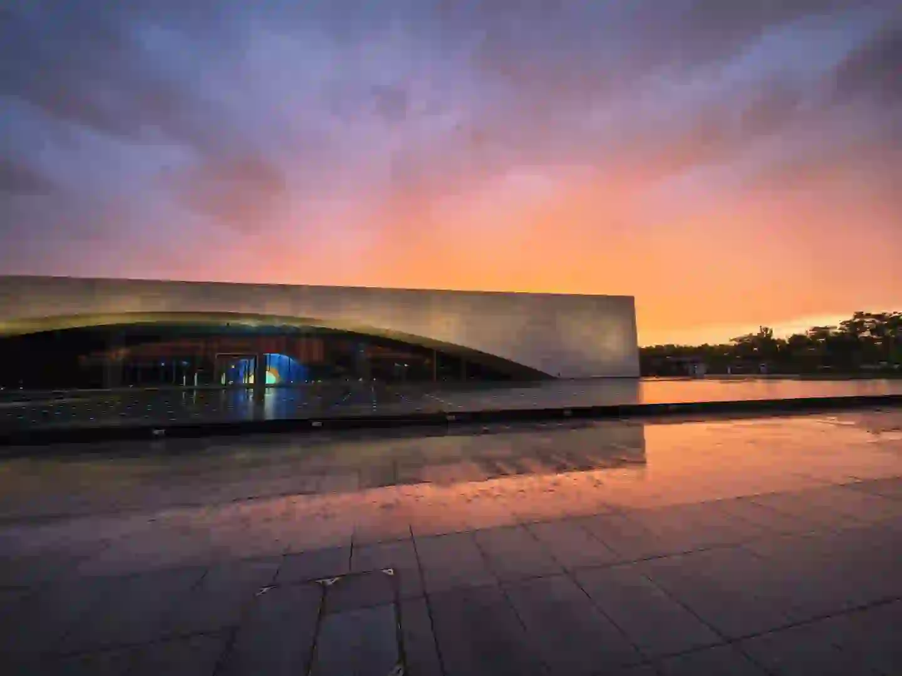
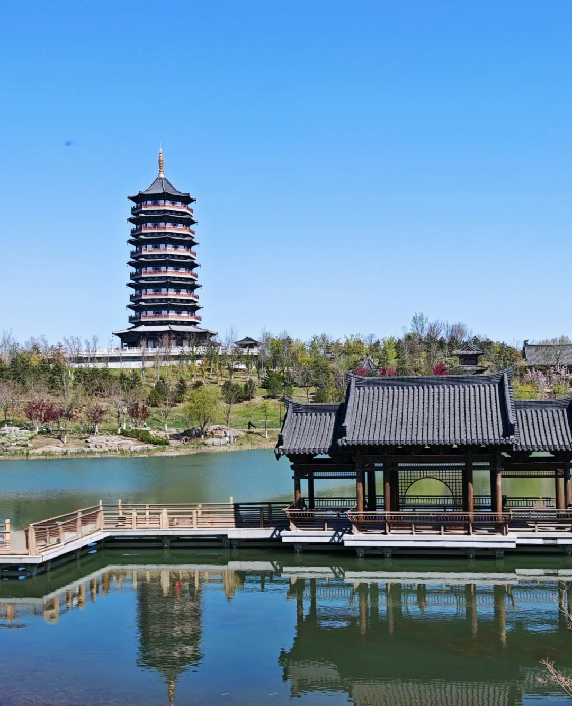


15:00 返程
雄安 → 望都家园（G4京港澳高速）
从容城上 G4高速向北，约 170km，预计 2 小时 15 分钟。预计 17:15-17:45 到家，不赶不急，到家还有时间休息。
必去景点一览
🏞️
白洋淀风景区
5A级景区，"华北明珠"。乘船穿行芦苇荡，赏荷花，品水乡风情。初夏最佳游览季节。
🏛️
雄安印象展览馆
光影科技+水墨丹青，沉浸式感受雄安从"一张白纸"到"未来之城"的变迁，拍照圣地。
👁️
雄安城市计算中心
"雄安之眼"地标建筑，拱形结构倒映水面，夜晚灯光璀璨，最佳拍照打卡点。
美食推荐
雄安味道
京鲁川湘粤 + 本地特色菜
奥威路97号 · 人均 ¥80-120
会友春饭店
白洋淀炖杂鱼 · 荷叶系列菜
容城县 · 人均 ¥60-100
圈头淀边渔家
野生炖杂鱼 · 小河虾 · 荷叶尖炒蛋
白洋淀大道191-193号 · 人均 ¥60-80
聚湘食餐厅
正宗湘菜系列
奥威路91号 · 人均 ¥60-90
费用预估
| 项目 | 明细 | 费用 |
|---|---|---|
| 油费 | 往返约340km，按0.7元/km | ≈ ¥240 |
| 高速费 | G4京港澳往返 | ≈ ¥140 |
| 白洋淀 | 门票+游船 | ≈ ¥150 |
| 停车费 | 白洋淀 ¥20 | ≈ ¥20 |
| 餐饮 | 午餐 | ≈ ¥100 |
| 合计 | 一日游不超 ¥700 | ≈ ¥650 |
出行小贴士
- 💡 早出发不堵：周日早上8点出发，六环和G4都很通畅，10点出头就能到白洋淀。
- 💡 白洋淀门票：可在携程/美团提前购票，通常比现场便宜 10-20 元。
- 💡 防晒防蚊：5月水边蚊虫较多，建议携带驱蚊液；户外活动注意防晒。
- 💡 舒适着装：乘船和逛展馆建议穿运动鞋或平底鞋。
- 💡 返程时间：15:00 出发，走 G4 一路畅通，周日午后车少，17:30 前到家。
- 💡 加油提醒：出发前在望都家园附近加满油，雄安沿线加油站较少。